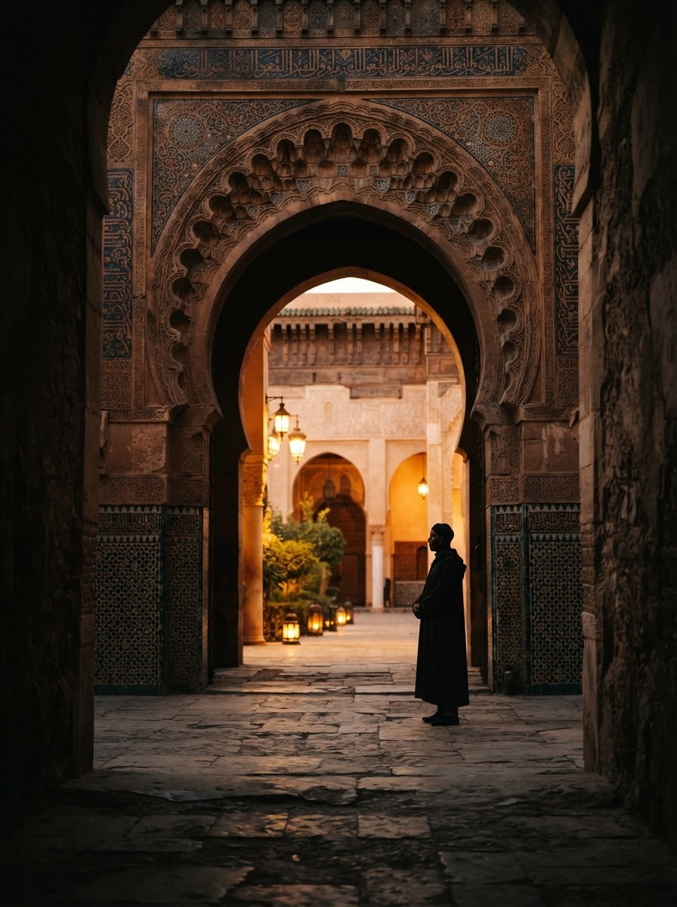
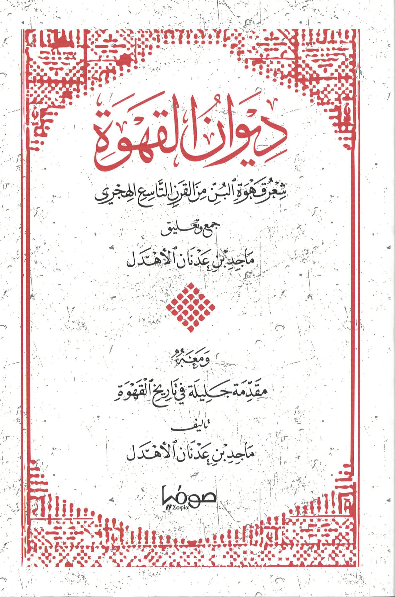
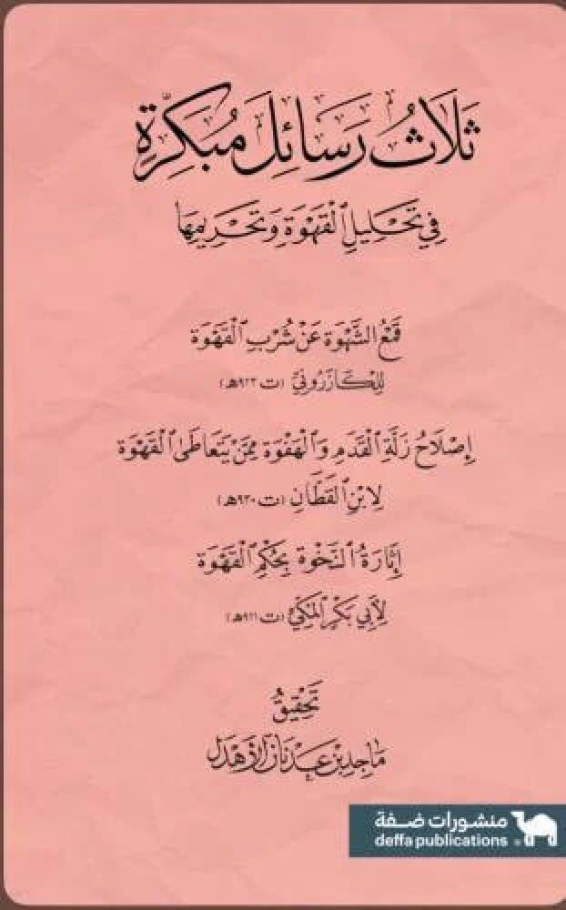

كلماتٌ تبحث عن شكلها
ماجد الأهدل. كاتبٌ، مُهتَمٌّ ومتَّهمٌ، مهتمٌّ بالتاريخ الثقافي للأشياء، ومتّهَمٌ بتأريخ القهوة. أمشي كثيرًا، في محاولة للتهادن مع الكورتيزول. أعتقد أنَّ الكتابة فعلٌ شنيعٌ، ولا أفهم من يدّعي العكس، لا أحتمل تعريف نفسي، فقَسْمُكَ منّي زاوية نظرك إليّ: لك الزاوية، ولي التّموضع. وليس من نافلة القول أنني: مهندسٌ..
«الحياة لا تُنصِف من لا ينتزع منها وجودَه الكامل.»
كُتبي

ديوان القهوة
شعر قهوة البنّ من القرن التاسع الهجري — ومعه مقدمة جليلة في تاريخ القهوة
جمعٌ وتحقيق لأقدم ما قيل في قهوة البنّ من شعر: أراجيز ومنظومات وموشحات ومقطوعات يعود أقدمها إلى القرن التاسع الهجري، تُنشر أغلبها كاملة لأول مرة. ومعه مقدمة في تاريخ القهوة: شجرتها وأصولها اليمنية، وفتنة تحريمها، وآداب مجالسها. جُمعت مادته من ١٦٤ مصدراً مطبوعاً و١٤ مخطوطة.
اقتنِ الكتاب ←
ثلاث رسائل مبكرة في تحليل القهوة وتحريمها
نصوص من فجر الجدل الفقهي حول القهوة
تحقيق لثلاث من أوائل الرسائل التي كُتبت في حكم القهوة أيام فتنة القول بتحريمها، خرجت من نقاشات علماء الحجاز في مكة نحو سنة ٩١٧هـ، وتُنشر لأول مرة — وثيقة لبدايات الجدل الذي انتهى بإجماع العلماء على إباحتها.
اقتنِ الكتاب ←